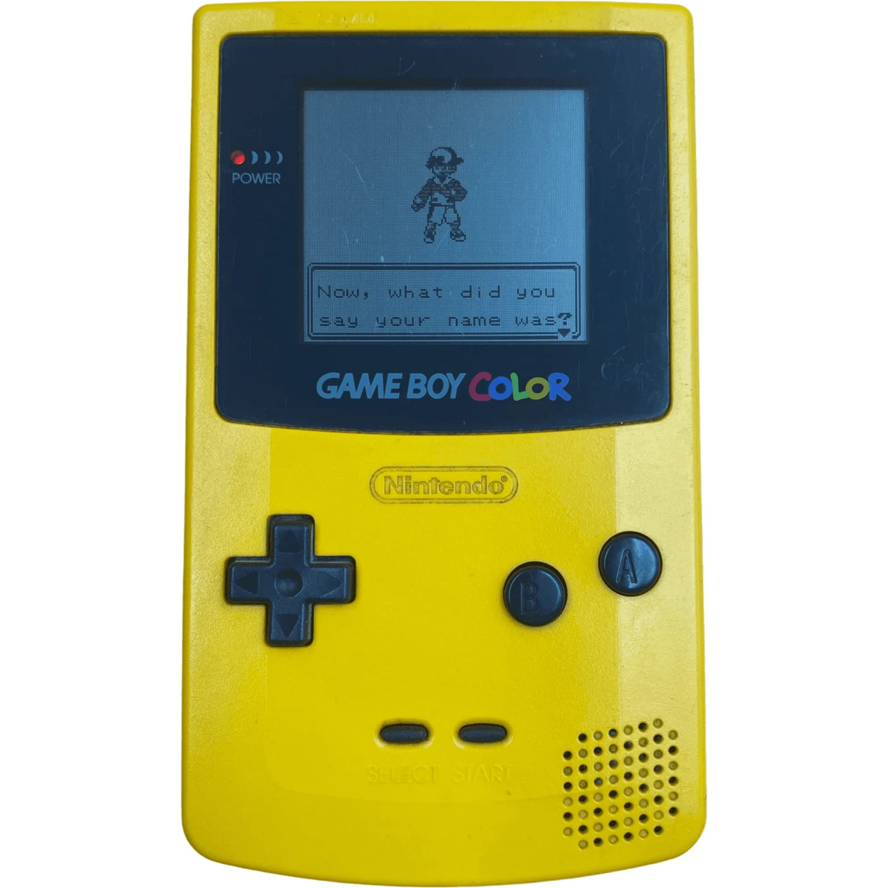
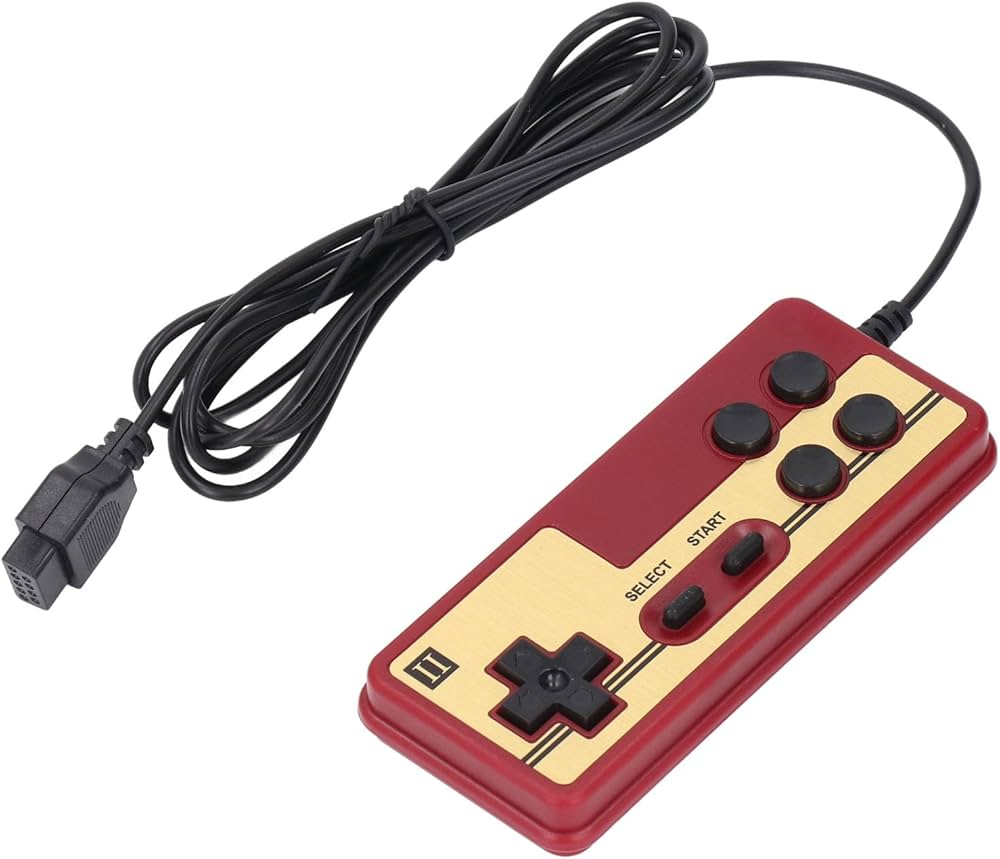

90'lı yılların efsanevi eğlencesi televizyonlu kara kutu atari seti yeniden sizlerle! İçerisinde yerleşik olarak bulunan binlerce nostaljik oyun sayesinde kaset takmadan da doğrudan televizyonunuza bağlayıp oynayabilirsiniz.

Orijinal Gameboy Color
Stok Kodu: PN-GBC-1998
2.100 TL
Nintendo'nun efsanevi el konsolu Gameboy Color şimdi karşınızda. Renkli ekranı ve pille çalışan taşınabilir yapısıyla retro oyun keyfini dilediğiniz her yerde kesintisiz yaşayın.
Super Mario Kaseti
Stok Kodu: PN-NES-MARIO
350 TL
Dünyanın en çok bilinen efsane platform oyunu Super Mario Bros'un orijinal kaset formu. Nostaljik tasarımı ve sorunsuz çalışan çipleriyle koleksiyoncular için kaçırılmayacak parça.

Arcade USB Kontrolcü
Stok Kodu: PN-ARC-USB
850 TL
Bilgisayarınızda veya emülatörlerinizde gerçek atari salonu hissiyatını yakalamanız için tasarlanmış, yüksek hassasiyetli ve tak-çalıştır mekanik USB kontrol kolu.